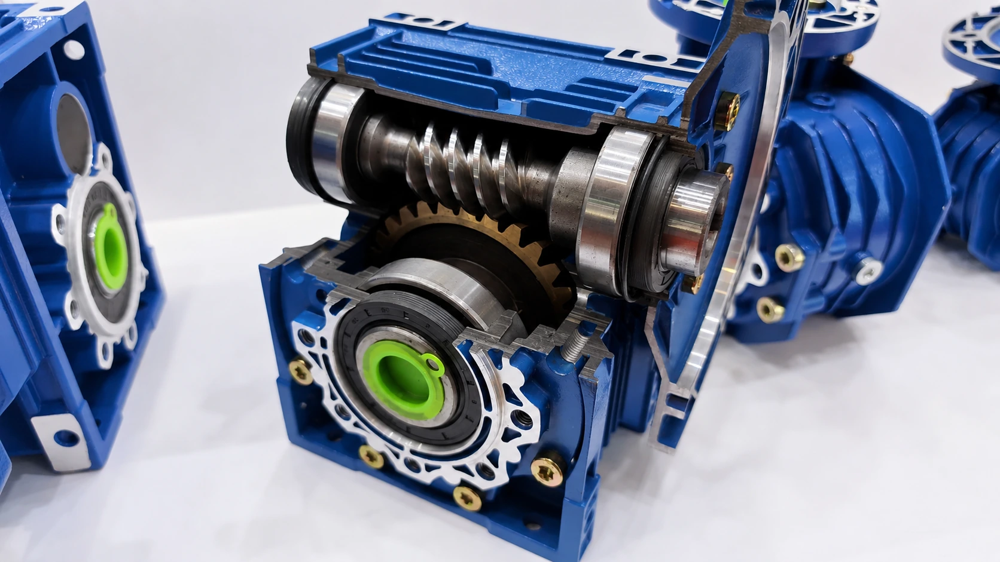

Published August 17, 2026 · Reviewed by SMK Transmission

Why Worm Gearboxes Generate Heat
The worm screw slides across the teeth of the worm wheel as it transmits power. This sliding action makes a compact, quiet and high-ratio right-angle drive possible, but some input power becomes heat. The gearbox housing and lubricant must release this heat to the surrounding air.
Efficiency, Power Loss and Output Torque
A useful engineering estimate is:
Output power = Input power × Gearbox efficiency
Output torque ≈ Input torque × Ratio × Efficiency
For example, if input torque is 5 Nm, ratio is 30:1 and assumed efficiency is 70%, estimated output torque is 5 × 30 × 0.70 = 105 Nm. This is only a calculation example; rated catalogue torque and service factor remain the selection limits.
| Factor | Typical effect | Engineering check |
|---|---|---|
| Higher ratio | May reduce efficiency and increase heat | Use manufacturer data for the exact size, ratio and speed |
| Very light load | Can produce lower practical efficiency | Avoid severe oversizing based only on torque |
| Continuous duty | Raises equilibrium oil and housing temperature | Verify thermal rating, not only mechanical rating |
| Incorrect lubricant or oil level | Increases friction or churning losses | Follow oil type, quantity and mounting instructions |
| High ambient temperature | Reduces the ability to reject heat | Apply manufacturer derating or choose a larger unit |
Does a Higher Ratio Always Mean Lower Efficiency?
Not in every case, but higher worm ratios often use geometry with a smaller lead angle and more sliding. Efficiency therefore tends to decrease as ratio rises. Input speed, load, oil viscosity, surface finish and operating temperature also influence the result. Do not use one generic efficiency percentage for every NMRV size and ratio.
What Is Thermal Capacity?
Mechanical capacity describes whether the gears, shafts and bearings can carry torque. Thermal capacity describes whether the reducer can continuously dissipate the heat generated at a given speed, ratio, load and environment. A reducer may meet the mechanical torque requirement but still run too hot in continuous service.
When Is a Warm Gearbox Normal?
A worm gearbox normally becomes warm during operation, and a new unit may run warmer during its initial running period. Surface temperature alone does not prove failure. Compare measured oil or housing temperature with the manufacturer limit, ambient temperature, load and stabilized running condition. Investigate rapid temperature rise, oil leakage, discoloration, smell, abnormal noise or repeated shutdowns.
Common Causes of Excessive Temperature
- Load torque or service factor above the selected rating
- Continuous operation beyond thermal capacity
- Wrong lubricant viscosity, degraded oil or incorrect oil quantity
- Mounting position not matched to the oil fill arrangement
- Poor alignment, excessive shaft load or damaged bearings
- Blocked airflow, dirty housing or installation near another heat source
- High ambient temperature or insufficient clearance around the gearbox
How to Improve Worm Gearbox Efficiency and Cooling
- Calculate real output speed, continuous torque and peak torque.
- Apply the correct service factor for load type, starts and operating hours.
- Check manufacturer efficiency and thermal data for the actual ratio.
- Use the specified oil and correct quantity for the mounting position.
- Align shafts and couplings and keep radial loads within limits.
- Leave airflow around the housing and keep cooling surfaces clean.
- For demanding continuous duty, consider a larger reducer or a higher-efficiency hypoid design.
Worm Gearbox vs Hypoid Gearbox
Worm reducers remain useful where compact right-angle layout, quiet operation, broad ratios and cost are priorities. Hypoid reducers may be preferable when higher efficiency, lower energy loss and long continuous duty dominate the decision. The right choice depends on the complete application rather than one efficiency figure.
Frequently Asked Questions
Why is my worm gearbox too hot to touch?
Touch is not a reliable temperature measurement. Measure the housing or oil temperature, then check load, current, lubricant, alignment, mounting, ambient conditions and running time against the manufacturer's limits.
Can too much oil cause a worm gearbox to overheat?
Yes. Excess oil can increase churning losses. Too little oil can also cause inadequate lubrication. Use the specified quantity for the actual mounting position.
Should I choose a larger worm reducer for continuous duty?
Possibly. Continuous duty must satisfy both mechanical and thermal ratings. A larger unit can provide more heat-dissipation area, but the selection should be checked with actual speed, torque, ratio and ambient data.